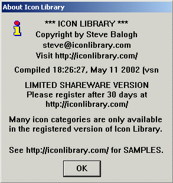

Go to the folder where Icon Library has been installed.
Double-click on the icolib5_shar.exe file if you have the
shareware version, or the icolib5_reg.exe file if you have the
registered version. Both of these files will have an icon that
looks like the letter i with a red dot. The .exe may
not be visible if you have not enabled file extensions on your system.
You can double click on any icon library file with the
.icl extension. The Icon Library Viewer application will
automatically start and then display the icons contained in the
.icl file you just double-clicked. Once the application
has started, you have access to all the other icons in the library
by navigating the Icon Library menus.
If you created a shortcut for Icon Library on your desktop,
you can double-click on it to start the Icon Library application.
Once the program starts, the shareware version will show a splash screen
until you click on the OK button. The registered version does not show
this screen when the application starts. The splash screen is displayed to
remind you that this product is shareware and that you should register if
you plan to continue using Icon Library. You are also given the web address
for Icon Library in case you obtained the product from some other place. The
Icon Library web site has additional sample images and registration
information.

This splash screen is only shown once when the shareware version of the
program starts. You can also display it in all versions of the program by
selecting the About Icon Library... option under the 'Help' menu.
Once you have started Icon Library, you can look at the setup
Options for the application or start
viewing the Icons contained in the library.